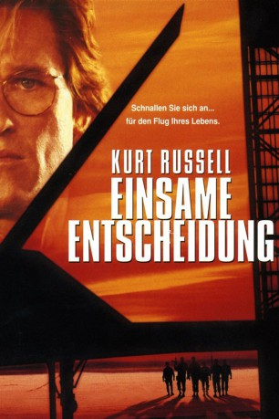

gesehen am 03.07.2016
gesehen am 03.07.2016Alternativ: Executive Decision gesehen am 03.07.2016
 
 IMDB-Wertung: 6.4 / 10
IMDB-Wertung: 6.4 / 10  Metascore:
Metascore: 
Schwerbewaffnete Terroristen aus dem Nahen Osten entern eine Passagiermaschine und zwingen den Flugkapitän zum Kurs auf Washington. Mit Hilfe eines Shuttleflugzeugs gelangt eine Antiterroreinheit (u.a. Steven Seagal, John Leguizamo und Kurt Russell) an Bord, doch weil die Terroristen über eine verheerende Bombe verfügen, bleibt den Soldaten nur wenig Zeit: Falls es ihnen nicht gelingt, ihre Widersacher binnen drei Stunden unschädlich zu machen, schießt das US-Militär die Maschine ab.
Jahr: 1996
Dauer: 132 Minuten
FSK: 16
Land: USA Studio: Warner Bros.Tonspuren: DD5.1 - ,
Untertitel: Deutsch,
Auflösung: 1080p (1920x800) Größe: 7557 MB
Genre: Action, Thriller, Abenteuer
Regisseur:  Stuart Baird
Stuart Baird
Drehbuch: Jean-François Beauchemin
Soundtrack:
Darsteller:
 Kurt Russell als Dr. David Grant
Kurt Russell als Dr. David Grant Steven Seagal als Lt. Colonel Austin Travis
Steven Seagal als Lt. Colonel Austin Travis Halle Berry als Jean, Flight Attendant
Halle Berry als Jean, Flight Attendant John Leguizamo als Rat
John Leguizamo als Rat Oliver Platt als Dennis Cahill
Oliver Platt als Dennis Cahill Joe Morton als Sergeant 'Cappy' Matheny
Joe Morton als Sergeant 'Cappy' Matheny BD Wong als Sergeant Louie
BD Wong als Sergeant Louie Len Cariou als Secretary of Defense Charles White
Len Cariou als Secretary of Defense Charles White Whip Hubley als Sergeant Baker
Whip Hubley als Sergeant Baker Andreas Katsulas als El Sayed Jaffa
Andreas Katsulas als El Sayed Jaffa Mary Ellen Trainor als Allison, Flight Attendant
Mary Ellen Trainor als Allison, Flight Attendant J.T. Walsh als Senator Mavros
J.T. Walsh als Senator Mavros Paul Collins als Nelson
Paul Collins als Nelson Nicholas Pryor als Secretary of State Jack Douglas
Nicholas Pryor als Secretary of State Jack Douglas Ken Jenkins als General Wood
Ken Jenkins als General Wood Charles Hallahan als General Sarlow
Charles Hallahan als General Sarlow Dey Young als Gail
Dey Young als Gail Richard Riehle als Airline Marshal George Edwards
Richard Riehle als Airline Marshal George Edwards Jay Tavare als Nabill
Jay Tavare als Nabill Shaun Toub als Terrorist
Shaun Toub als Terrorist David Suchet als Nagi Hassan
David Suchet als Nagi Hassan Ray Baker als 747 Captain
Ray Baker als 747 Captain Michael Milhoan als 747 First Officer
Michael Milhoan als 747 First Officer Yvonne Zima als Little Girl
Yvonne Zima als Little Girl Marianne Muellerleile als Diabetic Woman
Marianne Muellerleile als Diabetic Woman Don Fischer als Remora Pilot
Don Fischer als Remora Pilot Tim Kelleher als Bulldog
Tim Kelleher als Bulldog Nick Jameson als London Maitre D'
Nick Jameson als London Maitre D' Juan Fernández als London Bomber
Juan Fernández als London Bomber Todd Jeffries als Collins
Todd Jeffries als Collins Ilia Volok als Chechen
Ilia Volok als ChechenDatei: X:\1996\Einsame Entscheidung (1996, FSK16, 1920x800).mkv seit 23.06.2016
Festplatte: HD 1996-2002
 Es gibt insgesamt 78 Filme in der Gruppe '1996'
Es gibt insgesamt 78 Filme in der Gruppe '1996'